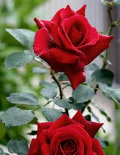

🌹🌳
Resultado de imagem para flores e rosas A diferença entre as duas é o tamanho, sendo que a importada é maior. A flor é associada à paixão e faz sucesso entre os apaixonados e é uma boa alternativa para qualquer ocasião. O produtor Sidlei Mendes explicou que as rosas florescem o ano todo. Por isso, é tão comum encontrar a planta em qualquer época do ano.
Ao olharmos a face inferior da folha da samambaia podemos ver suas bolsas de esporos (são aquelas bolinhas aveludadas). Este grupo de plantas, qual inclui cavalinhas e samambaias, também não possui flores.
Flor: A flor é uma folha diferente das outras. Ela tem cores e formatos difereciados. Além disso, a flor tem as estruturas que fazem a reprodução das plantas: o Gineceu (parte feminina) e o Androceu (parte masculina). … Fruto: O fruto é o produto da fecundação entre as partes masculina e feminina da planta.
As plantas são divididas em briófitas (as mais simples, sem vasos condutores de seiva), pteridófitas (já têm vasos condutores de seiva, mas não têm flor nem semente), gimnospermas (que têm sementes não revestidas, como o pinhão, do pinheiro do Paraná), e as angiospermas (plantas com sementes revestidas em frutos e que …
plantas são seres vivos que produzem seu próprio alimento através da fotossíntese. As plantas precisam de luz do Sol, água e ar para crescer. São incapazes de se locomover, e suas células têm paredes rígidas constituídas de um material resistente, a celulose.>
A flor é uma estrutura exclusiva das angiospermas. Elas podem ser definidas como ramos altamente modificados que apresentam como função garantir a reprodução do vegetal. Além de produzir os gametas, as flores têm estruturas que garantem a atração de polinizadores.
Nitrogênio em excesso pode resultar em um crescimento exuberante e verde, mas muito também pode reduzir a floração. Muito pouco fósforo também pode ser a causa da não floração das plantas. Por isso, muito cuidado ao usar adubos químicos em plantas.
Temperatura. A temperatura desempenha um papel importante em se a planta vai crescer ou não, mas como com a luz solar, a temperatura certa depende da planta. Plantas de estação fria, por exemplo, não vão florescer se as temperaturas são muito quentes.
Simples: limbo não dividido; Composta: o limbo é dividido em folíolos….Quanto à superfície: